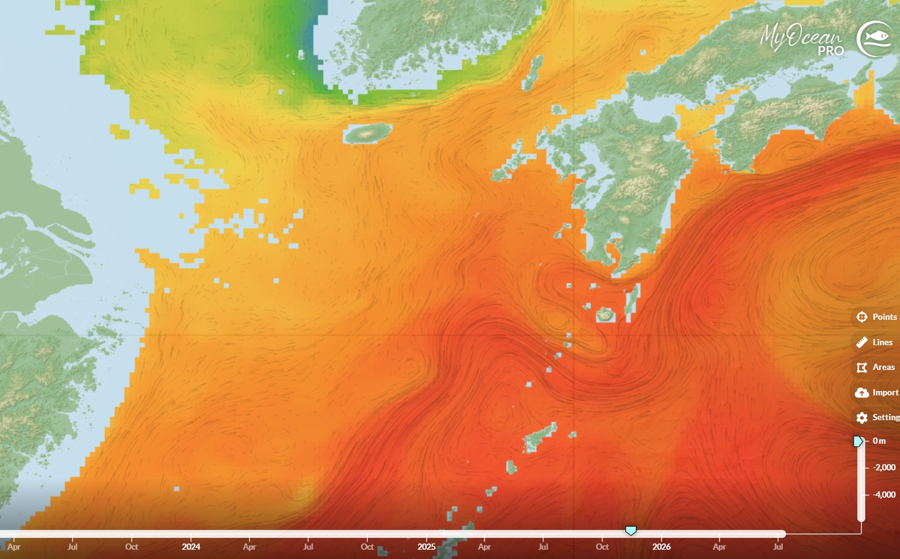

Copernicus Marine Expert Viewer
아래에서 수심과 날짜를 지정한 후, 원하는 해역의 지도를 클릭하면 해당 조건으로 뷰어가 열립니다.
📍 동해 및 주변 해역의 해수 특성 관찰

📍 다음은 서.남해 일대의 수온과 해류 구조를 관찰해봅시다.

아래에서 수심과 날짜를 지정한 후, 원하는 해역의 지도를 클릭하면 해당 조건으로 뷰어가 열립니다.
